Odara Community Documentation
An AI-first, open-source ETL/ELT platform built in Rust and React. Design pipelines visually, transform with SQL and Python, orchestrate with Maestros, and schedule at scale — all locally, all free.
1. Getting Started
1.1 What is Odara Community
Odara Community is the free, open-source edition of the Odara ETL/ELT platform. It lets you design data pipelines visually, connect to 30+ data sources and destinations, transform data with SQL or Python, and orchestrate complex workflows — all running locally on your machine.
Built in Rust for the backend (no JVM, no GC pauses) and React for the frontend, Odara combines modern engineering with a familiar drag-and-drop workflow inspired by tools like Talend and Informatica.
Visual pipeline editor
Drag, drop, connect. Configure each node with a side panel.
SQL + Python transforms
Use DataFusion SQL or embedded Python (pandas / PyArrow).
30+ connectors
Postgres, MySQL, Oracle, Snowflake, BigQuery, S3, Azure, Google Drive, FTP, REST, Email, and more.
AI assistant
Generate SQL, Python, or full pipelines from natural language (DeepSeek, Anthropic, Gemini, OpenAI).
Maestro orchestration
Combine pipelines into series or parallel workflows with retry policies.
Git integration
Version-control your pipelines directly from the editor.
1.2 Architecture at a glance
Odara is a single-binary backend that serves the UI and exposes a REST + SSE API. Data flows through pipelines as Apache Arrow RecordBatches, SQL runs in DataFusion, and Python runs in isolated subprocesses with PyArrow for data exchange.
- Backend:
odarax-api(Rust / Axum / Tokio) — serves HTTP API + static UI - Engine:
odarax-core(DataFusion + custom connectors) - Frontend: React + React Flow (visual editor) + Monaco (code editor)
- Storage: SQLite per project (WAL mode, encrypted credentials via AES-GCM)
- Communication: REST for CRUD, Server-Sent Events for execution progress
1.3 Installation
Windows
- Download
odara_0.1.0_windows_amd64.zipfrom the Download page. - Right-click → Properties → Unblock → OK (SmartScreen).
- Extract the zip.
- Double-click
start.bat— openshttp://localhost:3000automatically.
Linux
- Install the
.debpackage:sudo dpkg -i odara_0.1.0_amd64.deb - Start the service:
systemctl --user start odara - Open
http://localhost:3000.
1.4 First pipeline in 5 minutes
- Open Odara → create a new project (or use the default).
- In the Explorer, click + New Pipeline.
- From the Nodes palette, drag a
CSV Sourceonto the canvas. - Drag a
Consoletarget next to it, and connect them. - Click the CSV node → set the File Path.
- Click the green Execute button in the top bar.
You'll see real-time progress in the canvas and the rows printed in the Console Log panel. That's it — you have a running pipeline.
1.5 System requirements & Community limits
| Requirement | Minimum | Recommended |
|---|---|---|
| OS | Windows 10 / Ubuntu 20.04 / macOS 12 | Windows 11 / Ubuntu 24.04 / macOS 14 |
| RAM | 4 GB | 16 GB |
| Disk | 500 MB + project data | 10 GB free |
| Python (for Python transforms) | 3.9+ | 3.12 |
2. Projects
2.1 Creating a project
A project is a self-contained workspace with its own SQLite database storing pipelines, maestros, resources, and execution history. You can have many projects and switch between them instantly.
To create a new project, click the project selector in the top bar → + New Project. Fill in:
- Name — human-readable label.
- Path — where to store the project folder on disk. Defaults to
~/.odara/<name>. - Git enabled — whether to initialize a Git repo for versioning.
- Description — optional free-form text.
2.2 Project selector
The project selector in the top bar shows the currently active project. Click to see your recent projects and switch — no restart needed.
2.3 Project settings
Right-click the active project in the selector → Settings. From here you can:
- Rename the project or edit its description.
- Toggle Git integration.
- Configure the default environment for context variables.
- Delete the project (moves its folder to a
.trashdirectory).
2.4 Switching between projects
Click the project selector → pick a recent project → Odara swaps the active SQLite database and reloads the UI. Unsaved changes in the previous project trigger a confirmation prompt.
3. Editor
3.1 Interface overview
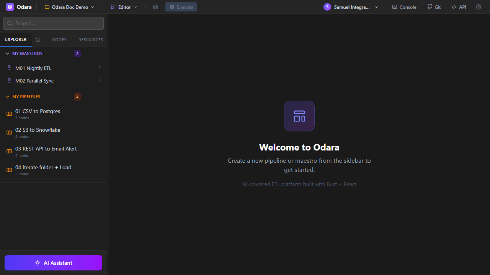
The Odara editor is the central workspace. It has four main areas:
- Top bar: project selector, page menu (Editor / Schedule / Monitor / Documentation / Admin), Save, Execute, Abort, Git toggle, AI Chat toggle, API reference, user profile.
- Left sidebar: Explorer tab (Pipelines / Maestros / Metadata / Folders), Nodes palette tab, Resources tab.
- Canvas: where you build pipelines or maestros. Supports zoom, pan, minimap, and multi-tab.
- Properties panel (right): appears when you select a node — shows its configuration.
3.2 Explorer
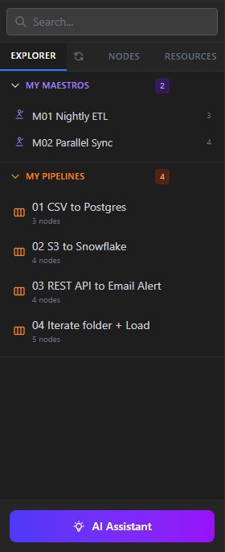
The Explorer lists all pipelines, maestros, and metadata (resources) in the current project. Click any item to select it; double-click to open it on the canvas.
Use the search bar at the top to filter by name. Items can be grouped into folders using the + New Folder button.
3.3 Nodes palette
The Nodes palette is the catalog of every available node type. Open it from the sidebar tab, or press Ctrl+P for a quick search:
- Ingest: sources that read data (Files, Databases, Data Warehouses, Object Storage, Productivity, Network APIs).
- Transform: SQL and Python transforms.
- Deliver: targets that write data (same categories as Ingest, plus Notifications and Debug).
- Orchestrate: control-flow nodes (Sleep, Run After, Iterate).
Drag a node from the palette onto the canvas to add it. See Section 4. Nodes Reference for every node's configuration.
3.4 Configuring nodes
Click any node on the canvas to open its Properties panel. Each node has its own schema; common patterns include:
- Path fields accept absolute or relative paths, and support variable interpolation:
C:\data\sales_@date.csv - Connection fields can be filled manually or pulled from a saved Resource (see Section 5).
- SQL / Python fields open in a Monaco code editor with syntax highlighting.
- Credential fields (passwords, access keys) are encrypted at rest with AES-GCM.
3.5 Multi-tab
Open multiple pipelines at once — each gets its own tab above the canvas. Edits are preserved per-tab. Close a tab with the × icon; if there are unsaved changes, you'll be asked to confirm.
3.6 Keyboard shortcuts
| Shortcut | Action |
|---|---|
Ctrl+S | Save current pipeline / maestro |
Ctrl+P | Quick search for nodes (palette) |
Ctrl+Enter | Execute pipeline |
Delete | Remove selected node or edge |
Ctrl+Z / Ctrl+Y | Undo / redo |
F | Fit canvas to content |
3.7 Preview output
Right-click any node and choose Preview to run only up to that node and view the first N rows in a data grid. This is the fastest way to debug a transform without executing the full pipeline.
3.8 Execution
Click Execute in the top bar. Progress streams live over Server-Sent Events: you'll see each node turn yellow (running), then green (completed) with row count and duration. If a node fails, it turns red and downstream nodes are skipped.
Click Abort to cancel a running execution — all in-flight work is stopped gracefully via cancellation tokens.
3.9 Console log
The Console panel at the bottom shows structured logs during execution: pipeline started, node started/completed/failed, row counts, durations, and final status. Click the Console button in the top bar to toggle it.
3.10 Data Quality Tests
Every node has a Tests tab in its Properties panel. Add assertions that run automatically after the node completes:
- Row count: expect rows ≥ N / ≤ N / exactly N
- Non-null: column has no null values
- Unique: column has unique values
- Range: numeric column in [min, max]
- Custom SQL: arbitrary expression must return TRUE
Failed tests appear as warnings in the console; you can configure a pipeline to abort on test failure or continue with warnings.
4. Nodes Reference
Odara Community ships with 63 node types, grouped into four categories: ingest (sources), transforms, deliver (targets), and orchestrate (control flow). Each node has a dedicated configuration schema shown in the Properties panel.
4.1 Files
4.1.1 CSV Source SOURCE
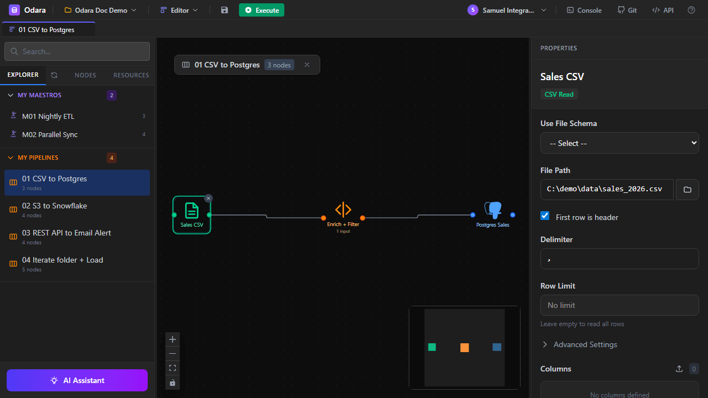
Reads data from a CSV (Comma-Separated Values) file into RecordBatches. Supports custom delimiters, headers, row skipping, and column selection.
| Property | Description | Default |
|---|---|---|
| File Path | Absolute or relative path to the CSV file. Supports variable interpolation (@date). | — |
| First row is header | Whether the first row contains column names. | true |
| Delimiter | Column separator: comma, semicolon, tab, pipe. | , |
| Row Limit | Maximum number of rows to read. Empty = unlimited. | — |
| Columns | Specific columns to select with per-column type hints. Empty = all. | All |
| Use File Schema | Optional — apply a saved File Schema resource for consistent column types. | — |
@date, @env, or any context variable to read dated / per-environment files: C:\data\sales_@date.csv
4.1.2 Excel Source SOURCE
Reads data from a .xlsx / .xls file. Supports sheet selection, header row position, row skipping, and column filtering.
| Property | Description | Default |
|---|---|---|
| File Path | Path to the workbook. | — |
| Sheet Name | Name of the sheet to read. Empty = first sheet. | First sheet |
| Header Row | 1-based row number containing column headers. | 1 |
| Skip Rows | Extra rows to skip after the header. | 0 |
4.1.3 XML Source SOURCE
Flattens hierarchical XML into tabular rows by specifying the repeating row element path.
| Property | Description | Default |
|---|---|---|
| File Path | Path to the XML file. | — |
| Row Element | Name of the repeating element (e.g., order for <orders><order>…). | — |
| Namespaces | Optional XML namespace declarations. | — |
4.1.4 Magic File Source SOURCE
Auto-detects the file format from extension and content. Supports CSV, JSON, NDJSON, Parquet, Excel, and XML. Use this when the format may vary or when you want minimal configuration.
| Property | Description | Default |
|---|---|---|
| File Path | Path to the file. | — |
| Sample Size | Rows to sample for schema inference. | 1000 |
4.1.5 CSV Target TARGET
Writes RecordBatches to a CSV file. See Properties in the editor — mirrors the source options plus Write mode (overwrite / append) and Include BOM.
4.1.6 Excel Target TARGET
Writes to a .xlsx file with configurable sheet name and header row.
4.1.7 XML Target TARGET
Writes rows as XML elements under a specified root and row element name.
4.1.8 Magic File Target TARGET
Automatically picks the output format from the file extension.
4.2 Databases
All database source nodes share a common pattern: configure the connection inline or pick a saved Data Store (Section 5.2), then write the SQL query (or set collection + filter for MongoDB). Database targets write RecordBatches back to a table.
4.2.1 PostgreSQL Source SOURCE
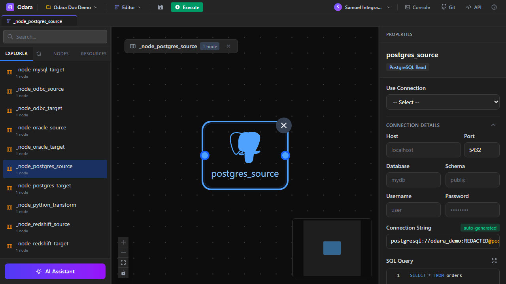
Connects to a PostgreSQL database and executes a SQL query. All PostgreSQL data types map automatically to Arrow equivalents. SSL modes supported: disable, prefer, require, verify-ca, verify-full.
4.2.2 MySQL Source SOURCE
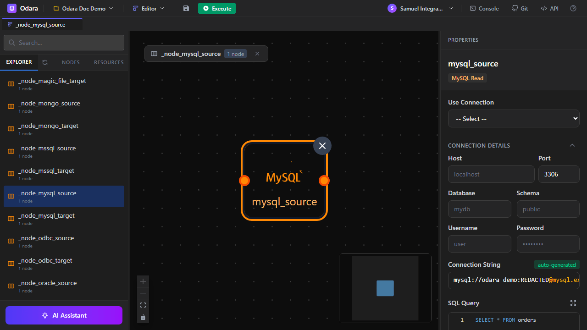
Connects to a MySQL or MariaDB database. Port defaults to 3306. All MySQL data types are mapped to their Arrow equivalents.
4.2.3 Oracle Source SOURCE
Connects to Oracle Database via the sibyl driver. Requires the Oracle Instant Client installed on the machine. Supports service names, SIDs, and TNS names.
4.2.4 SQL Server Source SOURCE
Connects to Microsoft SQL Server via the TDS protocol (tiberius crate). Supports named instances (e.g., SQLEXPRESS), Windows integrated auth (Trusted Connection), and certificate trust override for dev environments.
4.2.5 MongoDB Source SOURCE
Reads from a MongoDB collection. Supports aggregation pipelines, filters, and field projections. Documents are flattened into rows — nested objects can be extracted via dot notation or kept as JSON strings.
4.2.6 ODBC Source SOURCE
Generic ODBC connector — use when you need a database not covered by the dedicated connectors. Requires the appropriate ODBC driver installed (SQL Server, DB2, Informix, Sybase, etc.).
4.2.7 SQLite Source SOURCE
Reads from a local SQLite database file. No server connection — just a path to the .db / .sqlite file.
Database targets Postgres, MySQL, Oracle, SQL Server, MongoDB, ODBC, and SQLite each have a corresponding target node (4.2.8–4.2.14). All accept a connection + target table, with configurable write modes (overwrite / append / upsert).
4.3 Data Warehouses
Data warehouse connectors are tuned for analytical workloads: bulk reads, column projection pushdown, and batch inserts.
4.3.1 Snowflake Source SOURCE
Connects to Snowflake with account + warehouse + database + schema + user/password. Supports role impersonation via the role field. SQL queries run on the specified warehouse.
4.3.2 ClickHouse Source SOURCE
Reads from a ClickHouse cluster via the HTTP interface. Provide the URL (including port 8123 or 8443 for TLS), database, user, and password.
4.3.3 BigQuery Source SOURCE
Reads from Google BigQuery. Two modes: Table (direct read via Storage Read API) and Query (SQL query, optionally with a temp dataset for results). Authentication uses a service account JSON file.
4.3.4 Redshift Source SOURCE
Amazon Redshift via PostgreSQL wire protocol + TLS. Works with classic Redshift clusters and Redshift Serverless endpoints. Supports DirectWire read for large result sets.
4.3.5 DuckDB Source SOURCE
Embedded analytical database — DuckDB. Just provide a path to the .duckdb file and a SQL query. Zero-configuration for local analytics.
Data warehouse targets Each warehouse above has a corresponding target (4.3.6–4.3.10) that writes RecordBatches as INSERTs or bulk COPY commands where available.
4.8 Transforms
4.8.1 SQL Transform TRANSFORM
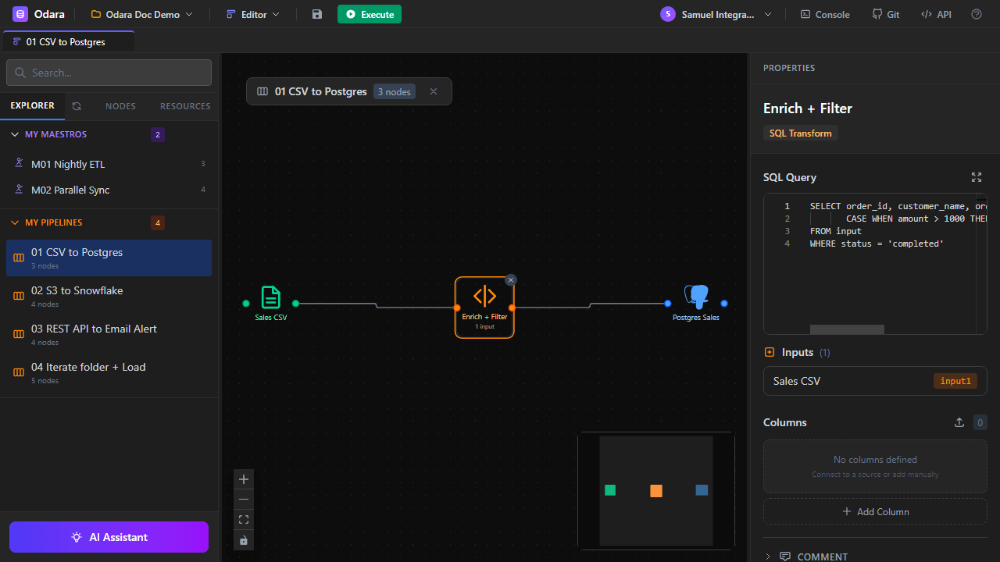
Executes a SQL query against the input RecordBatch(es) using Apache DataFusion. Reference input tables by their node name or use input for a single upstream.
| Property | Description | Default |
|---|---|---|
| Query | Any DataFusion-compatible SQL statement. | SELECT * FROM input |
Example — filter and enrich:
SELECT order_id, customer_name, amount,
CASE WHEN amount > 1000 THEN 'high' ELSE 'standard' END AS tier
FROM input
WHERE status = 'completed'4.8.2 Python Transform TRANSFORM
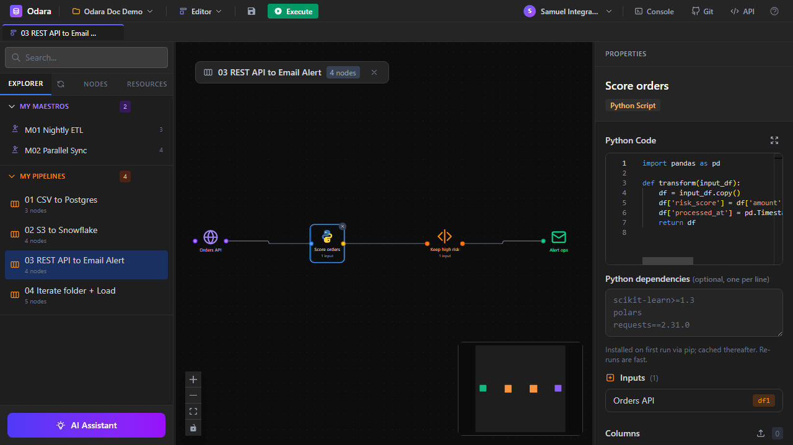
Runs Python code in an isolated subprocess. Data is passed in and out as pandas.DataFrame via PyArrow IPC — zero-copy where possible.
| Property | Description | Default |
|---|---|---|
| Code | Python function transform(input_df) returning a DataFrame. | — |
| Python Dependencies | Optional pip package list; installed on first run. | — |
import pandas as pd
def transform(input_df):
df = input_df.copy()
df['risk_score'] = df['amount'].apply(
lambda x: 'high' if x > 5000 else 'low'
)
df['processed_at'] = pd.Timestamp.utcnow()
return df
4.4 Object Storage
Odara treats S3, Azure Blob, and Google Drive as first-class object stores with a consistent pattern: List enumerates objects, Read/Download fetches them, Write/Upload uploads, Copy duplicates within or across containers, Delete removes them.
4.4.1 S3 List SOURCE
Lists objects under a bucket + prefix. Optionally fetches metadata (size, last modified, ETag). Output is one row per object, with columns bucket, key, and optional metadata fields.
4.4.2 S3 Read SOURCE
Downloads a single S3 object to local_path. Can be used in batch mode by setting key_source to From column — then reads one object per input row (typical pipeline: S3 List → S3 Read).
4.4.3 S3 Write TARGET
Uploads a local file to S3. Supports multipart uploads for large files. Same batch mode as Read.
4.4.4 S3 Copy TARGET
Server-side copy between S3 keys (no download/re-upload). Efficient for large objects.
4.4.5 S3 Delete TARGET
Removes an S3 object. Batch mode iterates input rows.
4.4.6 Azure Blob List SOURCE
Enumerates blobs in an Azure Storage container. Authentication modes: account key, SAS token, or connection string.
4.4.7 Azure Blob Read SOURCE
Downloads a blob to local disk. Same batch pattern as S3.
4.4.8 Azure Blob Write TARGET
Uploads to Azure Blob Storage.
4.4.9 Azure Blob Copy TARGET
Server-side blob copy within or across containers.
4.4.10 Azure Blob Delete TARGET
Removes a blob.
4.5 Productivity
Google Drive connectors use OAuth2. You provide client_id, client_secret, and refresh_token — Odara handles token refresh automatically.
4.5.1 Google Drive List SOURCE
Lists files in a Drive folder by folder_id.
4.5.2 Google Drive Read SOURCE
Downloads a file by file_id. Batch mode supported.
4.5.3 Google Drive Write TARGET
Uploads a local file to a Drive folder.
4.5.4 Google Drive Copy TARGET
Copies a file within Drive (no re-download).
4.5.5 Google Drive Delete TARGET
Moves a file to trash.
4.6 Network & APIs
4.6.1 FTP List SOURCE
Enumerates files on an FTP / FTPS / SFTP server. Supports password and SSH key authentication. Recursive listing optional.
4.6.2 FTP Read SOURCE
Downloads a file. Batch mode: one input row = one file fetched.
4.6.3 FTP Write TARGET
Uploads a local file. Can create intermediate directories on the remote.
4.6.4 FTP Rename TARGET
Renames (or moves) a remote file.
4.6.5 FTP Delete TARGET
Removes a remote file.
4.6.6 REST API (GET) SOURCE
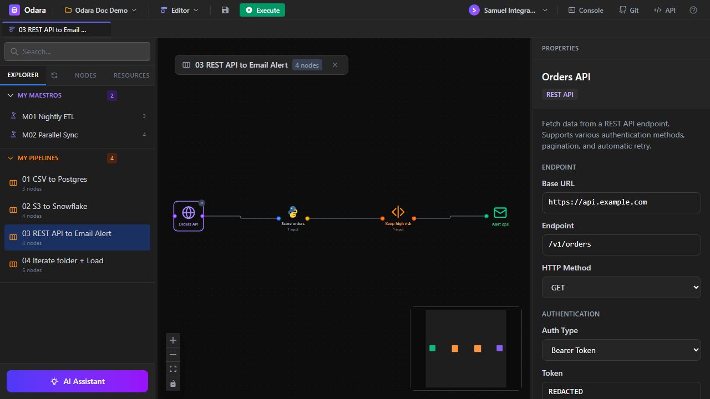
Fetches JSON from a REST endpoint. Built-in pagination strategies: page_number, offset, cursor, link_header, next_url. Authentication: none, basic, bearer, API key (header / query), OAuth2.
4.6.7 REST API (POST) TARGET
Sends rows to a REST endpoint. Batching: per row (one request per row) or array (N rows in one request body). Template-based JSON body with variable interpolation.
4.7 Notifications
4.7.1 Email TARGET
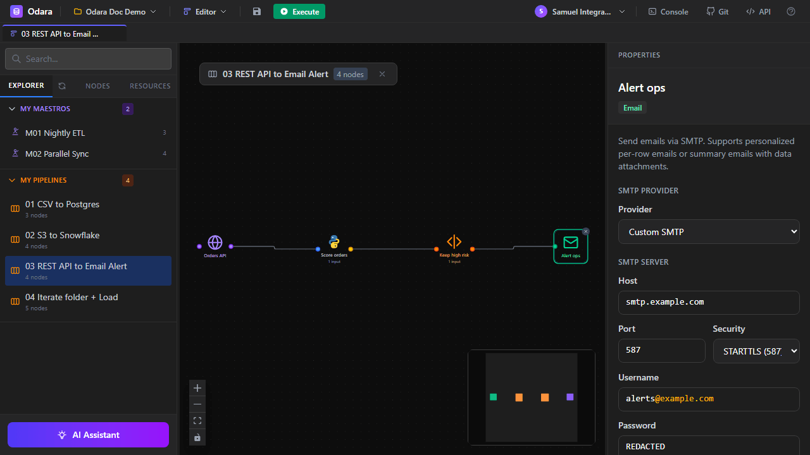
Sends email via SMTP. Provider presets: Gmail, Outlook, SendGrid, AWS SES, or custom. Security modes: none, STARTTLS, TLS. Supports per-row recipients (To column), attachments from file paths or input columns, and variable interpolation in subject/body.
Batch modes:
- per_row — one personalized email per input row (bulk marketing, per-user alerts).
- summary — one email with all rows aggregated (daily digest, reports).
4.9 Control Flow
4.9.1 Sleep CONTROL
Pauses the pipeline for a configurable number of seconds. Useful for rate-limiting API calls or waiting for external processes.
4.9.2 Run After CONTROL
Synchronization point — all upstream branches must finish before downstream nodes start. Use to join parallel paths.
4.9.3 Iterate CONTROL
Iterates over input rows, exposing each row's value as a variable that downstream nodes can interpolate. Ideal for looping over a list of files, IDs, or API endpoints.
4.10 Local System
4.10.1 File List SOURCE
Lists files in a local directory matching a glob pattern. Optionally recursive. Returns one row per file with columns path, name, size, modified.
4.10.2 Folder Manage TARGET
Creates, deletes, or moves a folder. Can be recursive.
4.10.3 File Manage TARGET
Creates, deletes, moves, or copies a file. Batch mode iterates input rows.
4.11 Debug
4.11.1 Console TARGET
Prints the first N rows to the Console log panel. Use during development to inspect intermediate results without writing to a real target.
| Property | Description | Default |
|---|---|---|
| Limit | Maximum rows to print. | 100 |
5. Resources
5.1 Overview
Resources are reusable configuration objects — connections, schemas, and variables — that nodes can reference by name. Storing a database connection once as a Resource means you don't repeat host/port/credentials in every node.
Open the Resources panel from the sidebar tab (right of Explorer). Resources are organized by type in a tree view.
5.2 Data Stores
Connections to databases and data warehouses. Each Data Store holds: database type, host/port, credentials (AES-GCM encrypted), database/schema, and optional retrieved schema metadata (table list, columns).
Create a Data Store: Resources panel → right-click → New Data Store → pick type (Postgres / MySQL / Oracle / etc.) → fill details → Test Connection → save.
5.3 File Storage (Schemas)
Reusable column schemas for delimited, JSON, XML, or Excel files. Apply a File Schema to any file-reading node to enforce consistent column names and types across pipelines.
5.4 Cloud Storage
Connections to S3, Azure Blob, and Google Drive. Credentials are encrypted; for Google Drive, the OAuth refresh token is stored and used automatically.
5.5 Remote Servers (FTP)
FTP / FTPS / SFTP credentials including host, port, auth method (password or key), username, and either password or private key + passphrase.
5.6 Schemas
Retrieved database schemas are cached per Data Store. Click Introspect Schema on a Data Store to fetch its table list; the result is stored in the resource for use by downstream pipelines.
5.7 Context Variables
Named values that pipelines can reference via @variable_name interpolation. Examples: @date, @run_id, @target_env. Create them from the Resources panel → New Variable.
Variables can be scoped per environment (dev / staging / prod) — the active environment determines which value is resolved at execution time.
6. Maestro (Orchestration)
6.1 What is Maestro
Maestro is Odara's orchestration layer. A Maestro combines multiple pipelines into a single workflow, coordinating their execution with series, parallel, and conditional logic.
Where a pipeline processes data, a maestro processes pipelines — think of it as a DAG of pipeline runs.
6.2 Canvas
The Maestro canvas looks like the pipeline canvas but with different node types. Each step is a pipeline call, a parallel group, or a conditional. Connect steps with edges to indicate dependencies.
6.3 Step types
- Pipeline Call — runs one pipeline by name or ID. Optionally with variable overrides.
- Parallel Group — runs multiple child steps concurrently, with configurable
max_concurrency. - Conditional — evaluates a SQL-like expression; runs
then_stepsorelse_stepsaccordingly.
6.4 Parallel vs. series execution
Connected linearly = series (A runs, then B, then C). Wrap steps in a Parallel Group = concurrent. Mix both for DAGs: parallel fan-out followed by a join (series) step.
6.5 Retry policies
Each Pipeline Call can have an optional retry policy: max attempts, backoff strategy (fixed / exponential), initial delay, max delay. Failures trigger retries up to the configured limit before the step is marked failed.
6.6 Built-in variables
Maestros expose several built-in variables to their pipeline calls:
@maestro_run_id— unique ID of the current maestro execution.@maestro_name— name of the maestro.@step_name— name of the current step.@previous_output— output of the directly preceding step.
6.7 Running
Click Execute on the maestro canvas. Progress streams live, with each step changing color as it progresses. Failed steps abort downstream dependents unless marked continue_on_failure.
7. Schedule
7.1 Overview
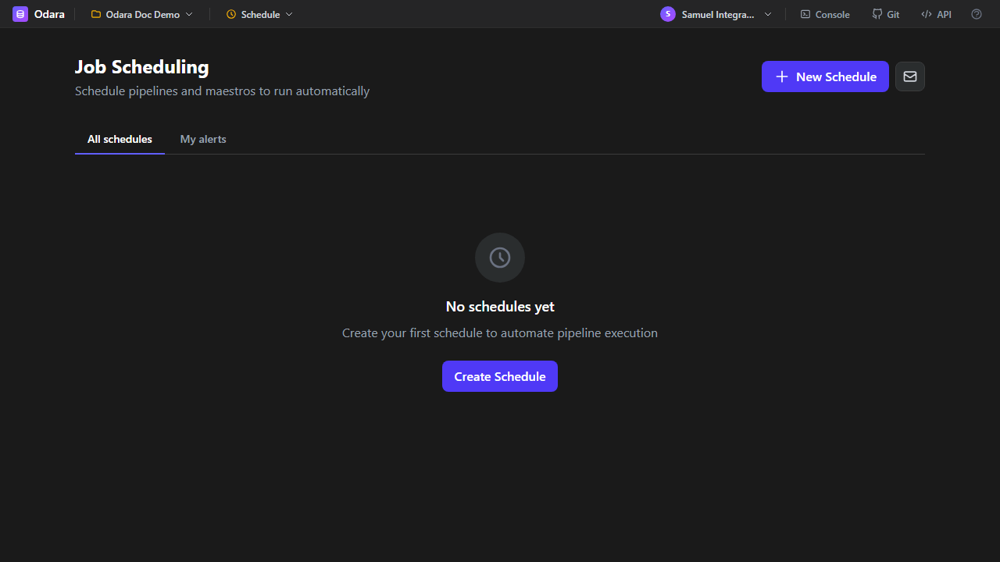
The Schedule page lets you run pipelines or maestros automatically on a cron schedule. Each schedule has a target (pipeline or maestro), a cron expression, a timezone, and optional email alerts on success or failure.
7.2 Cron builder
Click + New Schedule to open the cron builder. You can:
- Enter a raw 5-field cron expression (e.g.,
0 3 * * *for daily at 03:00). - Use the visual presets (hourly, daily, weekly, monthly) to generate the expression.
- See the next 5 execution times in your selected timezone for quick verification.
7.3 Timezones
Each schedule is bound to a timezone — the cron expression is evaluated in that timezone, not UTC. Common choices are America/Sao_Paulo, UTC, and America/New_York.
7.4 Associating pipelines and maestros
When creating a schedule, choose whether to run a pipeline or a maestro, then pick from the dropdown. If the pipeline uses context variables, you can override them per schedule — great for running the same pipeline against dev / staging / prod data.
7.5 Execution history
Each schedule keeps the last 30 executions visible from its details page. For a full history with search/filter, use the Monitor page.
7.6 SMTP settings
Click the mail icon in the top-right of the Schedule page to open SMTP settings. Configure host, port, security (none / STARTTLS / TLS), username, password, and sender address. Odara supports Gmail, Outlook, SendGrid, AWS SES, and any custom SMTP provider.
7.7 Email alerts
Per schedule, choose to be notified on:
- Success — every successful run (useful for scheduled reports).
- Failure — only when the run fails (recommended for most jobs).
- Both — full visibility.
Alerts contain the schedule name, timing, duration, status, and error message (if any). A direct link takes you to the Monitor page for deeper inspection.
8. Monitor
8.1 Overview
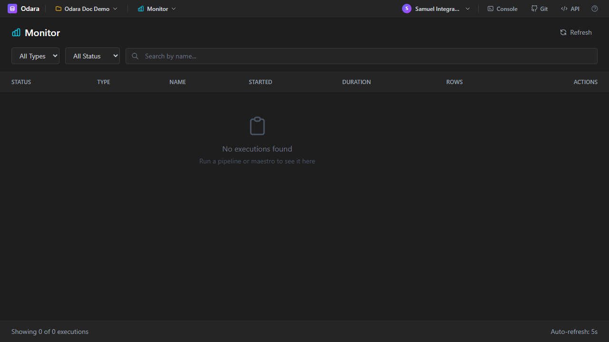
The Monitor page shows every pipeline and maestro execution, whether manual, scheduled, or API-triggered. Auto-refreshes every 5 seconds.
8.2 Filtering
Filter by type (Pipeline / Maestro), status (Running / Succeeded / Failed / Canceled), and free-text search over names. Results are paginated.
8.3 Execution details
Click any execution row to see per-node breakdown: started/finished, duration, row count in/out, any errors. Failed executions show the full stack trace for debugging.
8.4 Real-time updates
Running executions stream progress via Server-Sent Events — no polling, no refresh needed. The Monitor page subscribes automatically when a row is in the "Running" state.
8.5 Logs
From the execution details, click Logs to see the full console log captured during the run. Logs persist in SQLite and can be exported as .txt.
12. Administration
admin role. Other users see Editor / Schedule / Monitor / Documentation but not Admin.
12.1 Users
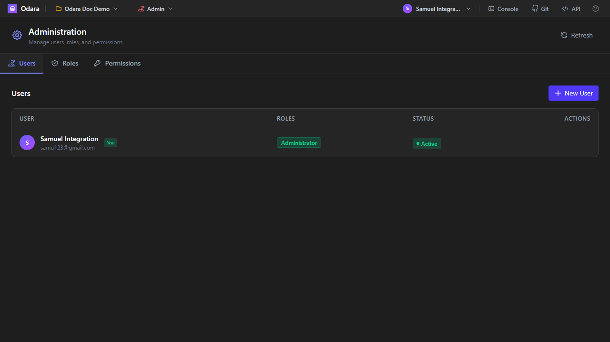
Manage user accounts: create, update, deactivate, delete. Each user has an email, display name, optional avatar URL, country, company, and telephone.
12.2 Roles
Four built-in roles ship with Odara Community:
- Administrator — full access, including user management.
- Developer — can create and edit pipelines / maestros / resources.
- Operator — can execute, schedule, and monitor, but not edit.
- Viewer — read-only access to everything.
12.3 Permissions
The Permissions tab shows the fine-grained matrix: which role can read/write/execute each resource type (pipelines, maestros, metadata, schedules, admin). In Community Edition the matrix is fixed; commercial editions allow custom roles.
9. Git (Source Control)
9.1 Panel
Click Git in the top bar to open the Git panel. It lists modified, staged, and untracked files, with a commit message input at the bottom.
9.2 Settings
The gear icon in the Git panel opens Settings: remote URL, username, credentials (password, personal access token, or SSH key), default branch, and commit author identity.
9.3 Commit
Stage files (click the + next to each changed file), write a commit message, click Commit. Odara commits only pipeline/maestro/metadata JSON files — execution history and logs stay local.
9.4 Push & Pull
Push publishes your commits to the remote. Pull fetches and merges; if there are conflicts in JSON pipeline files, Odara opens a 3-way merge view.
9.5 GitHub OAuth integration
Instead of managing personal access tokens, you can authorize Odara to talk to GitHub via OAuth. Settings → GitHub → Sign in with GitHub. Odara never sees your password; it receives a scoped OAuth token.
9.6 Test connection
In Git Settings, click Test Connection before saving. Verifies the credentials can reach the remote and have push permission.
10. Documentation (internal auto-generator)
10.1 Page overview
The Documentation page inside Odara auto-generates a project-scoped documentation site from the actual pipelines, maestros, and resources you've built. It's a mirror of your project's current state — always up-to-date.
10.2 Pipeline docs
For each pipeline, the generator produces: a screenshot of the canvas, a table of nodes grouped by category, each node's configuration (with secrets masked), any test results, and a data flow diagram.
10.3 Maestro docs
For each maestro: execution flow visualization, step types, variable overrides, pipeline references (linked to their own docs page), and retry policies.
10.4 Resource docs
Data Stores, File Schemas, and Variables are documented with masked credentials — passwords and keys appear as ••••••.
10.5 PDF export
Click Export PDF in the top-right of the Documentation page to generate a single PDF with the whole project. Good for archival, compliance, or handover.
11. AI Assistant
11.1 Chat panel
The AI Assistant is an in-editor chat panel (bottom-left purple button). You can ask it to generate pipelines, transforms, or fix errors. Open with the AI Assistant button or keyboard shortcut.
11.2 Settings (providers)
Supported providers:
- DeepSeek (recommended for cost) — default model
deepseek-chat. - Anthropic (Claude) — high-quality reasoning, good for complex pipelines.
- Google Gemini — multimodal support.
- OpenAI-compatible — any provider with OpenAI-style API (LocalAI, Ollama, OpenRouter).
Settings → paste API key → Test Connection → save. Keys are encrypted at rest.
11.3 Code generation
When you have an SQL Transform or Python Transform open, click the ✨ icon to ask the AI to write or modify the code. The AI sees the input schema and generates contextual code.
11.4 Pipeline generation (plan → compose)
From a natural-language goal like "Load yesterday's sales CSV into Postgres and email me a summary", the AI:
- Plans the steps as a high-level sketch.
- Composes each step into a fully configured node, wiring them together.
- Places the pipeline on the canvas for your review.
11.5 Fix errors with AI
When a node fails during execution, a Fix with AI button appears next to the error. The AI reads the error message + the node's config and suggests a corrected version. Accept or reject inline.
13. API Keys & External Access
13.1 What are API keys
API keys let external scripts and services authenticate against Odara's REST API without going through the login form. Keys have the prefix odk_live_ followed by a random identifier.
13.2 Creating & revoking
From the user menu (top-right avatar) → API Keys. Click + New Key, give it a name (e.g., "CI pipeline"), click Create. Copy the raw key immediately — it's only shown once; Odara stores just a hash.
To revoke a key, click the trash icon next to it. Revoked keys are rejected instantly by the API middleware.
13.3 Using from curl / scripts
Pass the key in the Authorization header:
curl -H "Authorization: Bearer odk_live_xxxxxxx" \
http://localhost:3000/api/v1/pipelinesThe API key middleware translates the key into a short-lived JWT for each request, so downstream handlers don't need to know the difference.
14. User Profile
14.1 Profile dialog
Click your avatar in the top-right → Profile. You can update your display name, email, avatar URL, country, company, telephone, and change your password.
14.2 Accessing API Keys
The user menu is also where you reach the API Keys page — keys are scoped to you as a user, not to the project.
15. Appendix
15.1 Keyboard shortcuts
See the full reference in Section 3.6.
15.2 Supported formats
| Category | Read | Write |
|---|---|---|
| Files | CSV, Excel, XML, JSON, NDJSON, Parquet | CSV, Excel, XML, Parquet (via Magic File) |
| Databases | PostgreSQL, MySQL, Oracle, SQL Server, MongoDB, ODBC, SQLite | Same as read |
| Data warehouses | Snowflake, ClickHouse, BigQuery, Redshift, DuckDB | Same as read |
| Cloud storage | S3, Azure Blob, Google Drive | Same as read |
| Remote servers | FTP, FTPS, SFTP | Same as read |
| APIs | REST (GET) | REST (POST/PUT/PATCH) |
15.3 DataFusion SQL reference
The SQL Transform uses Apache DataFusion, which implements most of ANSI SQL. Key features:
- Aggregates:
COUNT, SUM, AVG, MIN, MAX, ARRAY_AGG, APPROX_DISTINCT… - Window functions:
ROW_NUMBER, RANK, LAG, LEAD, FIRST_VALUE… with OVER / PARTITION BY / ORDER BY. - Joins: INNER, LEFT, RIGHT, FULL, SEMI, ANTI.
- Scalar functions: string (
concat, substr, regexp_match), date (date_trunc, date_part), numeric (abs, round, power), conditional (CASE, COALESCE, NULLIF). - CTEs:
WITH foo AS (…) SELECT … - Set ops: UNION, INTERSECT, EXCEPT.
15.4 Variable interpolation
Many fields support @variable interpolation, replaced at execution time with the current variable value (see Section 5.7). Supported in:
- File paths, directory paths.
- SQL queries (double-quoted to avoid conflict with column aliases).
- REST URLs, headers, query params, body templates.
- Email subject and body.
- Connection string fields.
Built-in variables: @date (today's date, ISO format), @datetime (current ISO timestamp), @run_id (unique ID of the current execution), @env (active environment name).
15.5 Troubleshooting
Pipeline execution returns 401 Unauthorized
Your session expired. Log in again; if using an API key from a script, verify the key is not revoked and the Authorization header uses the Bearer prefix.
Python Transform fails with "module not found"
The module isn't installed in Odara's Python environment. Add it to the node's Python Dependencies field — Odara runs pip install on first execution.
Oracle/DB2/ODBC nodes fail with driver errors
Odara uses native drivers that must be installed system-wide: Oracle Instant Client, IBM DB2 driver, or unixODBC / Windows ODBC. Use the Install Driver dialog (Help menu) to guide setup on common platforms.
Schedule doesn't fire
Check the timezone — cron is evaluated in the timezone bound to the schedule. Verify the pipeline/maestro still exists (deleted targets leave orphaned schedules).
15.6 Community edition limits
- Users: maximum 3 per installation.
- Streaming (Pulse): not available (Kafka, RabbitMQ, NATS, MQTT sources).
- Mapper node: tMap-style transform not available.
- Environment promotion UI: Deployment Center not available.
- Import Utility: Talend migration tool not available.
- Data Observability: lineage dashboard not available.
For these features, contact the maintainers about commercial editions.